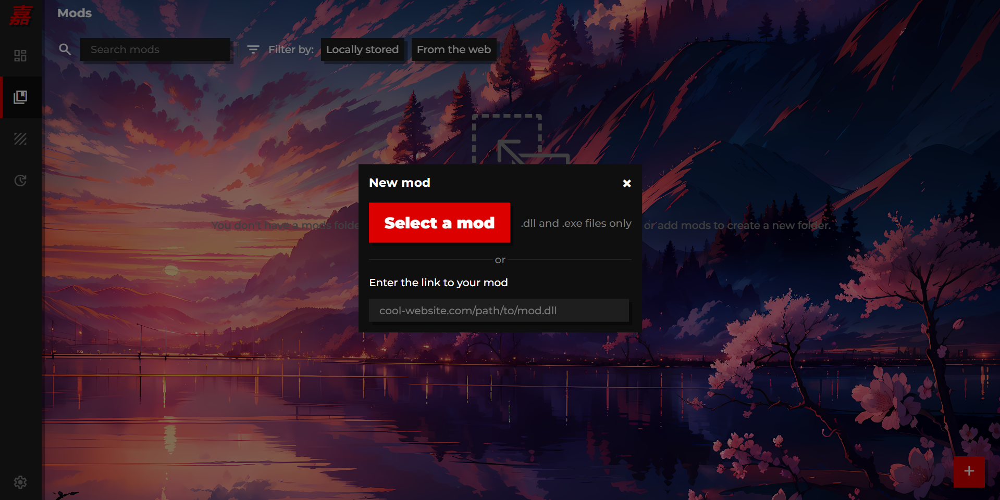

information
Jiayi Launcher is a mod manager for Minecraft for Windows. It is designed to be simple, easy to use, and extremely customizable.
The program can handle internal and external mods, manage multiple Minecraft installations, backup game data, apply RenderDragon shaders, and more.
We offer Jiayi Launcher as a free and open source project, licensed under the GNU General Public License v3.0.
More info can be found on the project's GitHub repository, including instructions on how to build, contribute, etc.
downloads
installer <~ recommended
GitHub releases <~ for portable/older versions
<- return
gallery
